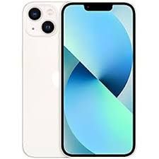
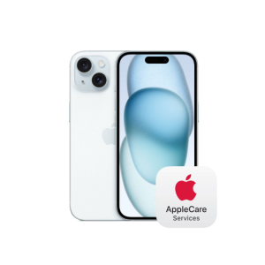
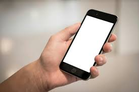

<html></html>
    <head>
        <title>SEMANTICS</title>
    </head>
    <body>
       <header>
        <marquee width="60%" direction="right" height="100px">
            '<h1>GADGETS</h1>
            </marquee>
        </header>
        <main>
            <nav><a href="#about">About</a>
                <a href="#reviews">Reviews</a>
                <a href="#contact">Contact us</a>
            </nav>
                   
       
            <p> A mobile phone or cell phone[a] is a portable telephone that can make and receive calls over a radio frequency link while the user is 
                moving within a telephone 
                service area, as opposed to a fixed-location phone (landline phone). The radio frequency link establishes a connection to the switching systems of a
                 mobile phone operator,
                 which provides access to the public switched telephone network (PSTN). Modern mobile telephone services use a cellular network architecture, and therefore 
                 mobile telephones are called cellphones (or "cell phones") in North America. In addition to telephony, digital mobile phones support a variety of other services, 
                 such as text messaging, multimedia messaging, email, Internet access (via LTE, 5G NR or Wi-Fi), short-range wireless communications (infrared, Bluetooth), satellite access 
                 (navigation, messaging connectivity), business applications, payments (via NFC), multimedia playback and streaming (radio, television), digital photography, and video games.
                  Mobile phones offering only basic capabilities are known as feature phones (slang: "dumbphones"); mobile phones that offer greatly advanced computing capabilities are referred to as smartphones.[1]</p>
        <section>
            <h1 id="about">about</h1>
            <h1>Mobiles</h1>
            <br>
            
            <aside>
                
            </aside>
        </section><br><br>
        <section>
            <article>
                <span>mobile 1</span>
                
            </article>
            <article>
                <span>mobile 2</span>
                
            </article>
            <article>
                <span>mobile 3</span>
                
                <aside>
                    
                </aside>
            </article>
        </section>
        <section>
            <h1 id="contact">contact</h1>
            <p>contact us</p>
            <adress>mobiles@gmail.com</adress>
            <p>
                The first handheld mobile phone was demonstrated by Martin Cooper of Motorola in New York City on 3 April 1973, using a handset weighing c. 
                2 kilograms (4.4 lbs).[2] In 1979, Nippon Telegraph and Telephone (NTT) launched the world's first cellular network in Japan.[3] In 1983, the DynaTAC 8000x was the 
                first commercially available 
                handheld mobile phone. From 1983 to 2014, worldwide mobile phone subscriptions grew to over seven billion; enough to provide one for every person on Earth.[4] In the first 
                quarter of 2016, the top smartphone developers worldwide were Samsung, Apple and Huawei; smartphone sales represented 78 percent of total mobile phone sales.[5] For feature phones 
                as of 2016, the top-selling brands were Samsung, Nokia and Alcatel.[6]
                
                
                </p>
        </section>
        <section>
            <h1 id="reviews">REVIEWs</h1>
            <p>iPhone 16 series was launched at the company's “Its Glowtime” event at Apple Park on September 9. Apple's latest smartphone lineup brings several hardware and software upgrades over the iPhone 15 series,
                 including the inclusion of Apple Intelligence – its suite of artificial intelligence (AI) features. However, 
                one upgrade which the Cupertino-based tech giant did not advertise but is tipped to be coming with the iPhone 16 series is much faster charging speeds than its predecessor. </p>
        </section>
        <h1>FAQ's</h1>
            <details>
                
                <summary>What is mobile?</summary>
                <p>A mobile phone or cell phone[a] is a portable telephone that can make and receive calls over a
                     radio frequency link while the user is moving within a telephone service area, as opposed to a fixed-location phone (landline phone). 
                    The radio frequency link establishes a connection to the
                     switching systems of a mobile phone operator, which provides access to the public
                      switched telephone network (PSTN). Modern mobile telephone services use a cellular network architecture, and therefore mobile 
                      telephones are called cellphones (or "cell phones") in North America. </p>
            </details>
        </section>
        </main>
        
    </body>
</html>
